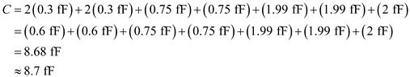
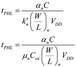

Step 1:
Refer to Figure 13.24 in the text book.
Write the expression for equivalent capacitance,  .
.
The gate drain overlap capacitance per micrometer of gate width is .
Determine the value of gate-drain overlap capacitance of transistor .
.
Substitute  for in the equation.
for in the equation.
Determine the value of gate-drain overlap capacitance of transistor .
.
Substitute for in the equation.
Step 2:
The effective drain body capacitance per micrometer of gate width is  .
.
Determine the value of drain-body capacitance,  .
.
Substitute  for
for  in the equation.
in the equation.
Determine the value of drain-body capacitance, .
Substitute  for
for  in the equation.
in the equation.
Step 3:
Step 4:
Determine the value of equivalent capacitance.

Substitute for ,  for , for ,
for , for ,  for
for  , for ,
, for ,  for and for in the equation.
for and for in the equation.

Step 5:
Determine the factor .

Substitute  for
for  and
and  for
for  in the equation.
in the equation.
Step 6:
Determine the factor .
Substitute for  and
and  for
for  in the equation.
in the equation.
Step 7:
Step 8:
Determine the value of high to low propagation delay.

Substitute for , for  , for , for
, for , for  and
and  for
for  in the equation.
in the equation.
Thus, the value of high to low propagation delay, is  .
.
Step 9:
Determine the value of propagation delay,  .
.

Substitute for  and for in the equation.
and for in the equation.
Thus, the value of propagation delay, is .
Step 10:
Determine the value of dynamic power dissipation when the circuit is operated at a  .
.
Substitute  for
for  ,
,  for
for  and for
and for  in the equation.
in the equation.
Thus, the value of dynamic power dissipation when the circuit is operated at a , is.
, is.
 for
for  ,
,  for
for  and for
and for  in the equation.
in the equation.
 for ,
for ,  for
for  ,
,  for , for
for , for  and
and  for
for  in the equation.
in the equation.